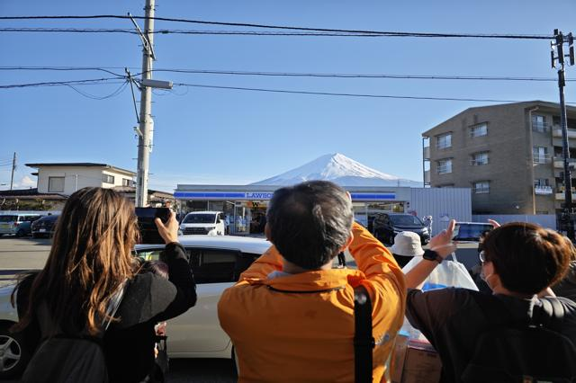
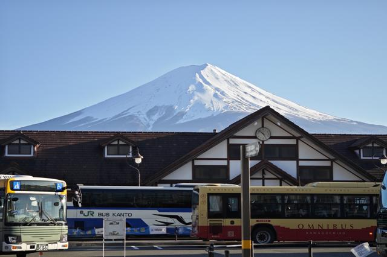
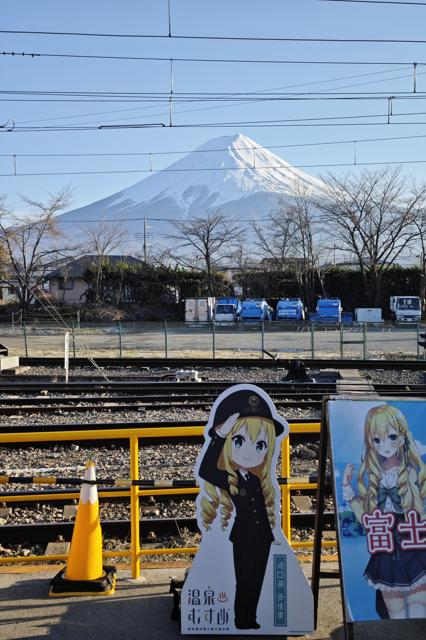
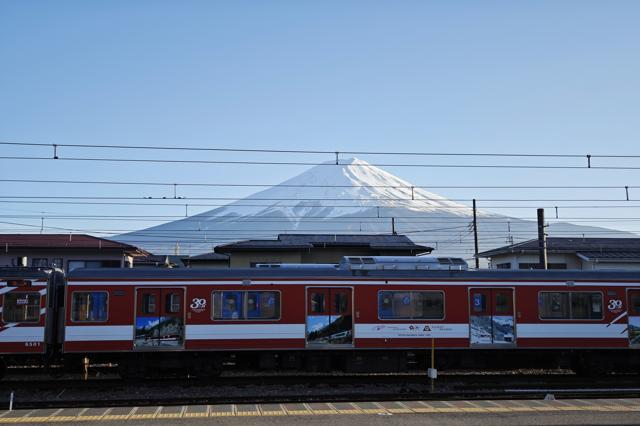
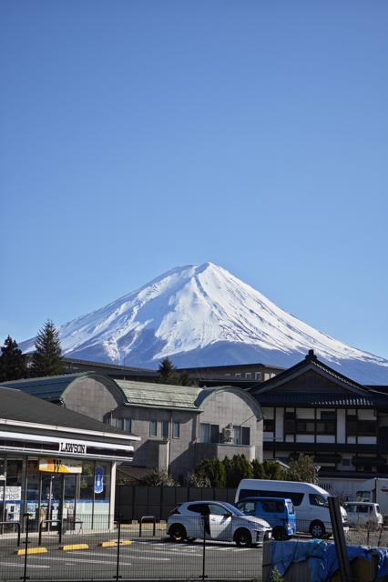
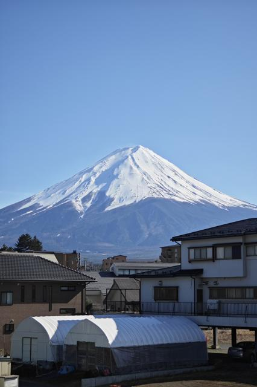
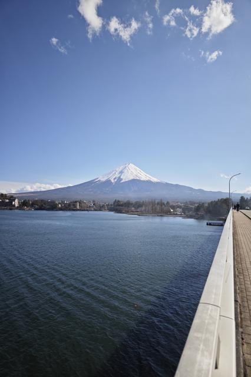
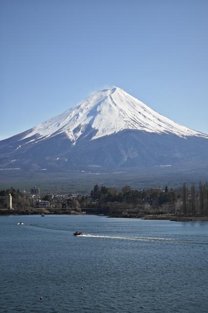
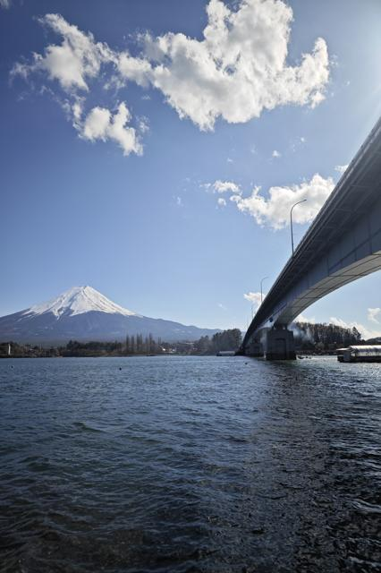
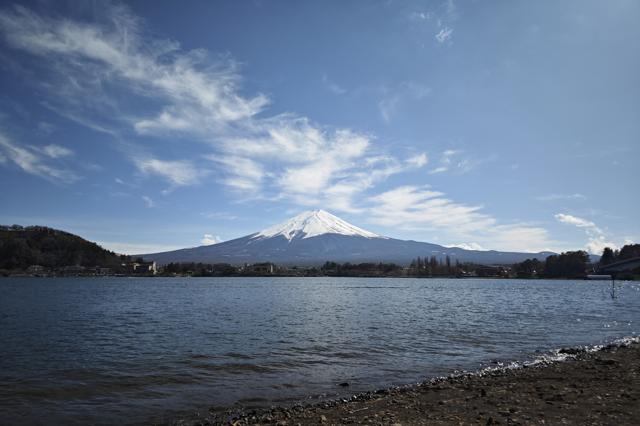

Recently in Japan, the local government of Kawaguchiko made a decision that has stirred up quite a bit of conversation and debate. They decided to erect a barrier to obstruct the view of the iconic Mount Fuji at a popular photo spot located in front of a Lawson convenience store. This decision was not made lightly or without careful consideration. It was a response to the overwhelming influx of tourists who, in their enthusiasm to capture the perfect shot of the famous mountain, often ended up causing issues such as noise pollution, littering, and traffic violations. This spot, once a symbol of serene beauty and a source of pride for the local community, had become a hotbed of conflict between the residents who call Kawaguchiko home, and the tourists who visit to experience the natural wonders of the area. The barrier was seen as a necessary measure to restore order and preserve the tranquility of the neighborhood.
However, if you’re worried about missing out on the beauty of Kawaguchiko and the breathtaking views of Mount Fuji, fear not. There are numerous alternative spots scattered throughout the area that offer equally stunning vistas and opportunities to capture the majestic mountain in all its glory. These spots not only provide a chance to appreciate the natural beauty but also offer a glimpse into the local culture and way of life.
Kawaguchiko Station
The main train station at Kawaguchiko is more than just a transportation hub. Right in front of it, you’ll find a fantastic photo spot that combines the bustling energy of a busy station with the serene majesty of Mount Fuji in the distance. The contrast between the modern architecture and the timeless natural wonder creates a unique composition that captures the essence of Kawaguchiko. As you approach the station, the sight of the iconic mountain rising above the bustling activity is sure to take your breath away.

Even after you’ve passed through the ticket checking machine at Kawaguchiko station, there’s another spot that offers a different perspective for capturing Mount Fuji. This vantage point allows you to incorporate the station’s distinctive architecture into your frame, creating a dynamic and visually interesting composition that blends the man-made and natural elements seamlessly.

And let’s not forget the train platform itself. While waiting for your train, you can take advantage of the unobstructed view of Mount Fuji, making it a great spot for landscape photography enthusiasts. The platform provides a unique perspective, allowing you to capture the mountain in all its glory, framed by the rails and the station’s infrastructure.

Lawson North-West
A little to the north-west from the main train station, not far from the serene shores of Lake Kawaguchi, there’s another Lawson convenience store that offers a beautiful view of Mount Fuji. This location is less crowded than the one that prompted the barrier installation, making it a more peaceful and tranquil spot for photography. The calm waters of the lake in the foreground, coupled with the towering presence of the mountain in the background, create a perfect picture-postcard scene that captures the essence of Kawaguchiko’s natural beauty.

Street 707
If you’re in the mood for a more urban exploration, take a stroll down Street 707, a charming thoroughfare lined with local shops and restaurants. This street offers a unique blend of urban life and natural beauty, with Mount Fuji serving as a stunning backdrop to the vibrant local culture. The juxtaposition of the bustling street activity and the serene mountain creates a one-of-a-kind photo opportunity that captures the essence of Kawaguchiko’s unique character.

Lake Kawaguchi Great Bridge
The Lake Kawaguchi Great Bridge is another excellent spot to capture the majesty of Mount Fuji. From the vantage point of the bridge, you’ll be treated to a panoramic view that encompasses the tranquil waters of the lake and the towering mountain in the distance. The contrast between the man-made structure of the bridge and the natural landscape creates a stunning visual that highlights the harmonious coexistence of human ingenuity and nature’s grandeur.

If you want to capture the intricate details of Mount Fuji, you can zoom in and focus on the mountain itself. The snow-capped peak, the rugged texture of its slopes, and the forested base all come into sharp focus, revealing the true awe-inspiring beauty of this natural wonder.

For a different perspective, you can also walk down the bridge and take a picture near the lake’s edge. From this vantage point, you’ll be able to capture the bridge itself, with Mount Fuji serving as a majestic backdrop. The reflection of the bridge and the mountain on the lake’s surface adds a magical touch to the scene, creating a truly unforgettable image.

Lake Kawaguchi
My personal favorite spot, however, is just at the shores of Lake Kawaguchi, on the other side from Kawaguchiko city. Here, you’ll be treated to a stunning view of Mount Fuji that is sure to take your breath away. The calm waters of the lake, the lush greenery surrounding it, and the majestic mountain rising in the backdrop create a picture-perfect scene that epitomizes the natural beauty of the region. This spot offers a serene and tranquil atmosphere, allowing you to fully immerse yourself in the majesty of your surroundings.

And when you zoom in on Mount Fuji from this vantage point, you’ll be able to appreciate the intricate details that make this mountain so captivating. The rugged texture of its slopes, the snow-capped peak glistening in the sunlight, and the wispy clouds hovering around it create a mesmerizing sight that is sure to leave a lasting impression on any photographer or nature lover.

As we explore and enjoy these breathtaking spots, it’s important to remember to respect the local community and follow the rules and guidelines set forth by the authorities. Let’s ensure that our enjoyment and appreciation of nature’s wonders do not come at the cost of others’ peace and tranquility. By being mindful and responsible visitors, we can help preserve the beauty of Kawaguchiko for generations to come. Happy snapping, and may your journey be filled with unforgettable moments and stunning vistas!